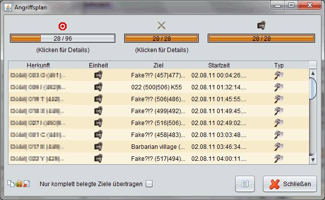

| |
Angriffsplaner - Ergebnisse |
|
| |
|  |
| |
Wurden alle Einstellungen vorgenommen erhält man nach einem Klick auf Berechnen eine Liste der möglichen Angriffe.
Der obere Bereich der Ergebnisübersicht zeigt Statistiken zum berechneten Angriffplan. Der erste Balken zeigt das Verhältnis zwischen angegriffenen Zielen (links) und anfangs vorgegebenen Zielen (rechts). Dieser Wert hängt von der Anzahl der eigenen beteiligten Dörfer, der Anzahl von Angriffen pro gegnerischem Dorf und der Entfernung zum Gegner ab. Im oben gezeigten Beispiel werden auf 96 Dörfer des Gegners 28 Angriffe geschickt.
Der zweite Wert gibt an, wieviele von den Dörfern verplant wurden, die anfangs unter Herkunftsdörfer angegeben wurden. Im Beispiel konnten alle 28 verwendeten Herkunftsdörfer möglichen Zielen zugeordnet werden. Details zu den ersten beiden Werten erhält man, indem man auf den entsprechenden Balken mit der linken Maustaste doppelt klickt.
Der letzte Wert gibt an, auf wieviele Ziele (siehe Wert 1) die maximale Anzahl an Angriffen läuft. Der Wert für die maximale Anzahl von Angriffen konnte vorher in den Ziel-Einstellungen festgelegt werden.
Nachfolgend findet man die Tabelle der errechneten Angriffe. Aus dieser kann man über entsprechende Shortcuts die Angriffe übertragen.
|
| |
Shortcut-Funktionen |
| |
- Kopieren per STRG+C: Kopiert alle markierten Angriffe in die Zwischenablage, um sie in der Angriffsübersicht per STRG+V einfügen zu können.
- Kopieren als BB-Code per STRG+B: Kopiert die markierten Angriffe als BB-Codes in die Zwischenablage, um sie etwa im Spiel in die Notizen einzufügen. Ist das Optionsfeld "Nur komplett belegte Ziele übertragen" aktiviert, werden nur Angriffe kopiert, auf welche die maximale Anzahl an vorher festgelegten Angriffe laufen.
- Löschen per ENTF: Löscht alle markierten Angriffe aus der Ergebnistabelle.
|
| |
|
Es wird dringend empfohlen, den Ergebnissen des Angriffsplaners nicht blind zu vertrauen! Zumindest das Vorhandensein entsprechender Truppenstärken ist vor dem Abschicken zu prüfen. Zudem kann es vorkommen, dass mehrere Angriffe zu genau demselben Zeitpunkt abgeschickt werden müssen. In diesem Fall sind manuelle Korrekturen notwendig. |
|
|